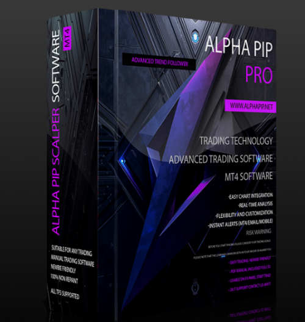

Forex Alpha Pip PRO Indicator For MetaTrader 4 Platform
Product profile · Marketplace data 2026-10-09 · Sales-page research 2026-10-09 · Categories: Business & Investment, Software

Marketplace record
| Product type | Software |
|---|---|
| Price | $41.39 (Single payment) |
| Affiliate commission | 60% |
| Refund window | Per the vendor's sales page — check the official page before buying |
| Vendor | forexobroker (listed since 2025-11-06) |
| Marketplace stats* | Cart conversion — · cancel rate — · affiliate earnings/sale $24.83 |
* Vendor-side marketplace statistics reported by Digistore24; they depend on traffic quality and are not a forecast.
Vendor's marketplace description
What is Alpha Pip PRO? Alpha Pip PRO is a next-generation MetaTrader 4 indicator designed for scalpers and day traders who thrive on precision, speed, and actionable clarity. Built using advanced mathematical algorithms and price-behavior analytics, Alpha Pip PRO identifies probable market tops and bottoms in real-time, giving traders the power to capture pips from the best reversal spots repeated…
From the vendor's sales page
Page title: New Alpha Pip PRO Indicator For MetaTrader 4 Platform
Meta description: ALPHA PIP PRO is a powerful, algorithm-based indicator built specifically for scalpers and day traders who thrive on fast decision-making and consistent performance.
Headline
New Alpha Pip PRO Indicator For MetaTrader 4 Platform
Boost your Trading with ALPHA PIP PRO!
Section headlines
- Buy Now For Only 37$
Opening copy
Introducing the ALPHA PIP PRO Indicator for MT4 Precision. Speed. Power The New Standard in Scalping and Day Trading. In the fast-paced world of forex trading, every pip matters. The difference between success and frustration often comes down to timing — knowing exactly when to enter and when to exit the market. That’s where ALPHA PIP PRO comes in: a next-generation MT4 indicator designed to identify tops and bottoms with remarkable accuracy, giving traders the clarity and precision they need to dominate short-term markets.
APLHA PIP empowers traders to stay ahead of volatility, take advantage of price swings, and make confident trading decisions every day.
Whether you’re new to trading or a seasoned professional, APLHA PIP will become your go-to indicator for spotting opportunities the moment they appear.
Guarantee language found: “60” — always confirm the current terms on the official page before relying on it.
Research method: raw HTML fetch · 411 words on page · quality: rich · researched 2026-10-09. Full research file (MD) ↗
Where to check it out
Read the vendor's full sales page (current price, guarantee terms and bonuses are listed there):
View official sales page
That link is an affiliate link — if you buy through it we earn a commission from the vendor at no extra cost to you.